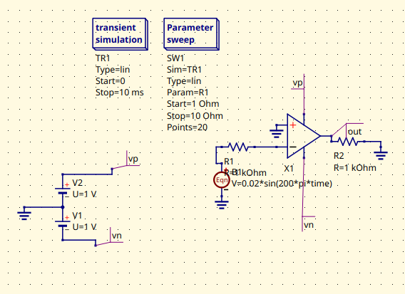
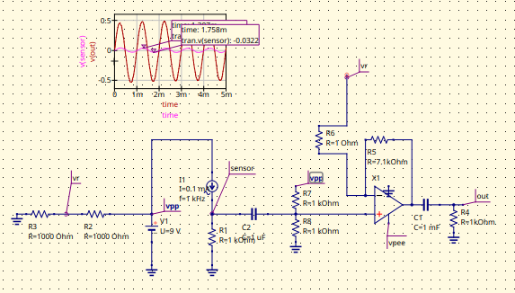

Electrical and computer engineering student developing circuit design, analysis, and technical communication skills. This portfolio focuses on my projects and learning in EC EN 340, including the work I contribute, the engineering skills I practice, and how I plan to improve.
A concise, employer-facing overview of my current work and direction.
Introduction
My name is Owen Preece, and this page is a collection of projects and work from EC EN 340: Electronic Circuit Design. The goal of this portfolio is to document what I work on in the class, explain my contribution to each project or lab, and show how I apply course concepts to practical circuit-design problems.
EC EN 340 emphasizes electronic device models and amplifier design, especially amplifier gain and frequency response—principles that affect the performance of both analog and digital systems. I will use this page to organize project evidence, explain my methods and results, and reflect on what I learn throughout the course.
These projects apply op-amp circuit design and SPICE simulation to practical signal-conditioning problems. I emphasize comparing circuit configurations, keeping schematics readable with tags, and using simulation data to support conclusions about circuit behavior.
1Lab / Analysis
Project 1: Op-Amp Buffer for a Sensor

Project 1 — op-amp buffer schematic and simulation evidence.
Context: Design the simplest possible op-amp buffer for a sensor modeled as 0.02sin(200πt) V in series with a 100 kΩ source resistance. The circuit should preserve the signal across a load that varies from 1 kΩ to 10 kΩ.
Design requirements
Use an MCP6001 op amp in SPICE, two +15 V power supplies, and any needed discrete components. Set the resistor to 1 kΩ for submission and label the output node out.
My contribution
I focused on keeping the buffer design simple and the schematic easy to follow, using tag features to make important nodes and connections clearer. I also used simulation data to evaluate the op-amp configuration and support conclusions about how well it preserves the input signal under the specified load conditions.
What it demonstrates
Op-amp buffer design, understanding source and load resistance, and using SPICE to test whether a circuit preserves a small input signal.
Reflection
The simulated output met the required output needs, showing that the buffer could preserve the sensor signal while reducing the effect of the sensor’s high source resistance on the load. This reinforced the value of a buffer when a signal source should not be significantly loaded by the next stage.
Next steps
For a real-world implementation, decide on the component order and select practical component values based on the sensor, expected load range, available supply rails, and the MCP6001’s operating limits. Then verify the design with realistic component models and measurements.
2Design / Technical explanation
Project 2: Amplifier for a Light-Following Robot

Project 2 — light-following robot amplifier schematic and simulation evidence.
Context: Design an op-amp amplifier for a light-following robot that uses a sinusoidally varying flashlight signal to reduce sensitivity to room light. The input is an AC current with 0.1 mA peak-to-peak amplitude connected to a 1 kΩ resistor to ground.
Design requirements
Use an MCP6002 op amp and a 9 V battery connected to ground, with no additional voltage sources. Preserve all connections in the starting circuit. Target an output of 1 V peak-to-peak ±5% and an average output voltage below 1 mV. Submit an NGspice .cir file and label the output node Out.
My contribution
I explored a variety of filter options and op-amp configurations, then used simulation data to compare their behavior and support my design conclusions. I also used schematic tags to organize and label the circuit clearly, making the signal path and important nodes easier to read while checking the output amplitude and average voltage against the requirements.
What it demonstrates
Designing an amplifier to meet quantitative specifications, working within power-supply and circuit constraints, and validating a design with NGspice.
Reflection
The simulated output met the required output needs, including the target peak-to-peak amplitude and the low average-voltage requirement. Comparing filter options and op-amp configurations helped show how circuit choices affect both the desired signal amplitude and the rejection of unwanted low-frequency or steady components.
Next steps
For a real-world implementation, determine the component order and choose practical resistor and capacitor values to meet the required gain and filtering behavior with real sensor signals. Next, check component tolerances, the available 9 V supply, and the op amp’s input/output limits, then validate the design with hardware measurements.
When sharing this portfolio, follow course rules for publishing files and team work, and clearly identify individual contributions.
03 · Reflection
Design Journey
A short account of what I have learned so far and how I will use that learning in the next iteration.
What I have learned
These projects reinforced that a circuit should be evaluated against measurable requirements, not just whether the schematic looks correct. Simulation helps me check whether the output behaves as intended and compare design choices before building hardware. I also learned that clear node labels and a readable signal path make a circuit easier to inspect and troubleshoot.
What I want to improve
I want to improve my ability to translate a working simulation into a practical hardware design. That means explaining why I chose a component order, showing how component values were selected, and considering real op-amp limits and component tolerances instead of relying only on idealized simulation behavior.
My next step: For each circuit, document the component order and calculate practical resistor and capacitor values, then check the design against the required output specifications and the op amp’s supply, input, and output limits. Where possible, validate the revised design with realistic models and hardware measurements.